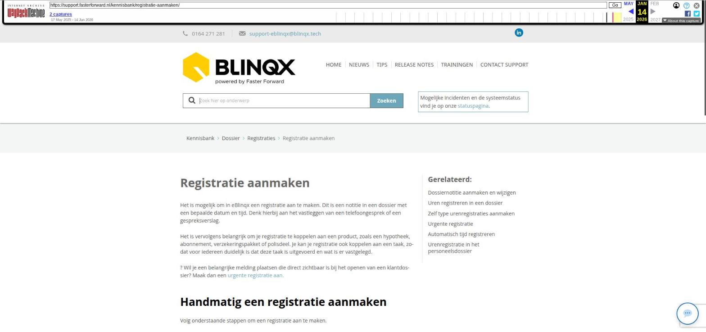

Registratie aanmaken

Tekstinhoud
Registratie aanmaken
Het is mogelijk om in eBlinqx een registratie aan te maken. Dit is een notitie in een dossier met een bepaalde datum en tijd. Denk hierbij aan het vastleggen van een telefoongesprek of een gespreksverslag.
Het is vervolgens belangrijk om je registratie te koppelen aan een product, zoals een hypotheek, abonnement, verzekeringspakket of polisdeel. Je kan je registratie ook koppelen aan een taak, zodat voor iedereen duidelijk is dat deze taak is uitgevoerd en wat is er vastgelegd.
? Wil je een belangrijke melding plaatsen die direct zichtbaar is bij het openen van een klantdossier? Maak dan een urgente registratie aan.
Handmatig een registratie aanmaken
Volg onderstaande stappen om een registratie aan te maken.
1. Klik rechtsboven op de startpagina van een klantdossier op 'Registratie aanmaken'
2. Vul vervolgens alle velden in
Maak de registratie zo compleet mogelijk door alle velden na te lopen en (indien van toepassing) in te vullen.
Taak: koppel de registratie aan de bijbehorende taak om vast te leggen hoe en door wie deze taak is afgerond.
Product: koppel de registratie aan een product om alle communicatie omtrent een product, bijvoorbeeld een hypotheek of schadepakket, overzichtelijk vast te leggen.
Polis: koppel de registratie aan een polisdeel om alle communicatie omtrent een specifieke polis, bijvoorbeeld een autoverzekering, overzichtelijk vast te leggen.
Koppelen aan een polis is alleen mogelijk als je werkt met mutatievoorstellen.
Registreer voor een andere persoon: vink dit aan als je deze registratie namens een collega aanmaakt. Er verschijnt dan een dropdown-menu om deze collega te selecteren.
Publiek: vink deze optie aan als je wilt dat jouw klanten deze registratie ook moeten zien in hun mijn-omgeving (uwkluis of digimap).
Facturabel: vink deze optie aan om de bestede tijd toe te voegen aan de facturatie van de klant. Aan het einde van de maand kan je dan bijvoorbeeld een factuur sturen naar de klant, waar deze registratie op staat.
Urenregistratie: vink deze optie aan om vast te leggen dat je deze tijd hebt besteed aan de klant. Deze tijd wordt dan zichtbaar in de 'Urenregistratie' module.
Registratie direct koppelen aan product
Het is ook mogelijk om via dezelfde knop rechtsboven een registratie aan te maken als je in een product zit. Op deze manier wordt de registratie automatisch aan het bijbehorende product gekoppeld.
Laatste update: 15 oktober 2025
Was deze informatie nuttig?
Ja Nee